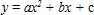

Вправа 6.1. Пошук екстремуму функції однієї змінної
Виконуючи цю вправу, ви маєте знайти точку екстремуму та мінімальне значення функції
- Створіть нову електронну книгу. Введіть у клітинку А2 довільне число, а в клітинку В2 – формулу цільової функції =А2^2+А2+2 (рис. 6.6). Ви отримаєте математичну модель задачі (обмежень у цьому випадку немає). Збережіть таблицю у файлі Bпpaвa_6_1.xlsx.
Рис. 6.6. Вихідні данні для знаходження екстремуму квадратичної функції - Виконайте команду Дані
 Аналіз Пошук розв'язку та заповніть поля у діалоговому вікні Пошук розв'язку: задайте цільову клітинку В2; оберіть пошук мінімального значення (перемикач Равной (Рівній) установіть у положення минимальному значению (мінімальному значенню)); у полі Изменяя ячейки (Змінюючи клітинки) вкажіть адресу клітинки змінної А2 (рис. 6.7).
Аналіз Пошук розв'язку та заповніть поля у діалоговому вікні Пошук розв'язку: задайте цільову клітинку В2; оберіть пошук мінімального значення (перемикач Равной (Рівній) установіть у положення минимальному значению (мінімальному значенню)); у полі Изменяя ячейки (Змінюючи клітинки) вкажіть адресу клітинки змінної А2 (рис. 6.7).
Рис. 6.7. Заповнені поля у вікні Поиск решения - Клацніть кнопку Выполнить (Виконати). Буде відкрито вікно Результати поиска решения (Результати пошуку розв'язку). Клацніть кнопку ОК. Результат розв'язання задачі відобразиться у клітинках А2 та В2 (рис. 6.8). Легко пересвідчитися, що результат правильний, адже вершина параболи  міститься в точці х = -b/2а = -0,5.
Рис. 6.8. Результат розв'язання оптимізаційної задачі - Знайдіть за допомогою засобу Пошук розв'язку мінімум та максимум функції у = х + 1/х.